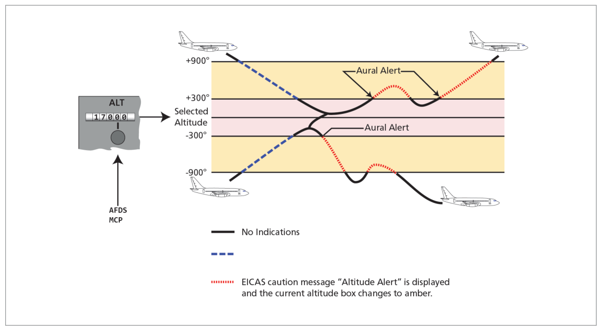
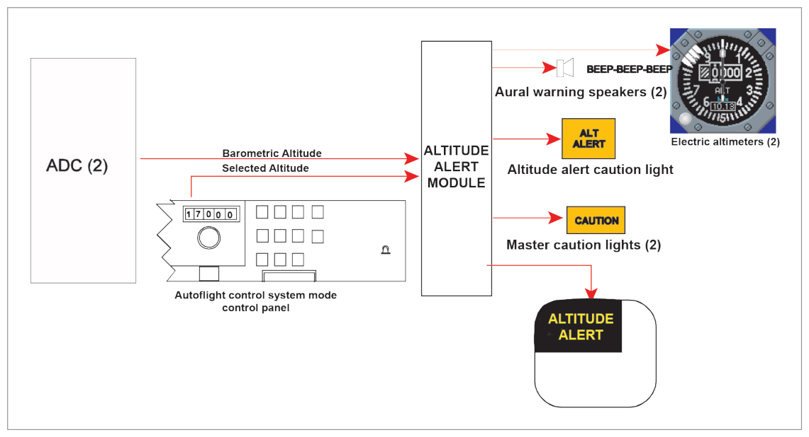
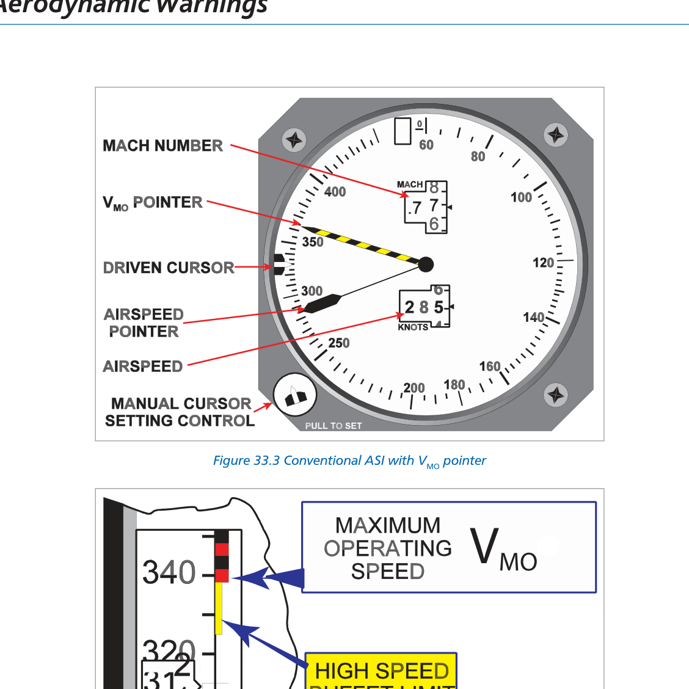
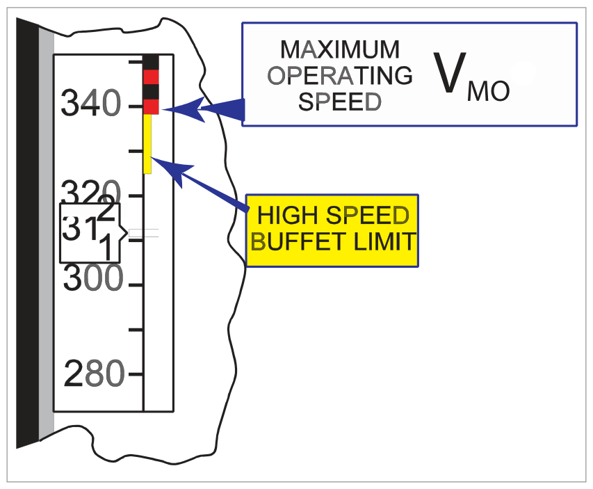
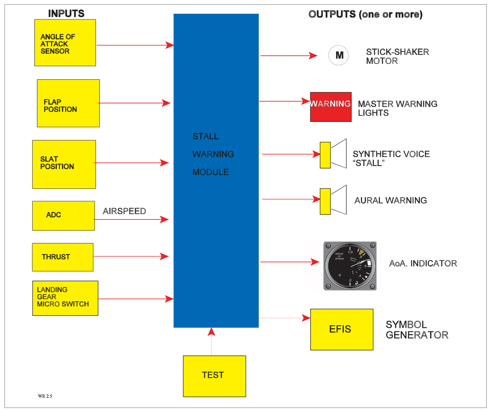

Aerodynamic warnings alert the crew when deviations occur in altitude, airspeed, or angle of attack. Three primary systems: Altitude Alerting, Overspeed Warning, and Stall Warning.
Warns pilots that the aircraft is approaching or deviating from the selected altitude.
Height Bands
Aircraft
Approach Band
Deviation Band
Boeing
300–900 ft of selected altitude
300 ft from selected altitude
Airbus
250–750 ft of selected altitude
—
Boeing 747-400 Operation
Approaching selected altitude:
At 900 ft prior: white box around current altitude on PFD + momentary aural alert
At 300 ft prior: white box disappears
Deviation from selected altitude: At 300 ft from selected:
Master caution lights illuminate
Continuous caution beeper sounds
EICAS caution message ALTITUDE ALERT displayed
Current altitude box changes to amber
Cancellation: Audible alert and master caution can be cancelled by pressing the light. Warning ceases when aircraft returns to within 300 ft of selected altitude OR exceeds 900 ft deviation.
Inhibition: Altitude alerting is inhibited in flight when:
Glide slope is captured, OR
Landing flaps are selected with the gear down
Regulatory Requirement
EASA CAT aircraft must have altitude alerting if:
Turboprop > 5700 kg or > 9 passenger seats, or
Any turbojet aircraft

Fig 33.3 — Altitude alerting system block diagram, Boeing 767 (source p.440)
3. Overspeed Warning
Alerts the crew when airspeed exceeds the VMO/MMO limits calculated by the ADC.
Operation
When overspeed occurs (EFIS aircraft):
Sounds the siren or horn
Illuminates red master WARNING lights
Displays OVERSPEED on EICAS upper display in red
Warning continues while overspeed exists and CANNOT be cancelled by pressing the master WARNING light switch.
Input: ADC via FWS. Can be tested on ground by pressing the test switch (sounds siren/horn).
In case of system failure: no warning if VMO/MMO is exceeded.
Displays
Maximum allowable speed shown by barber's pole:
Conventional ASI: barber's pole pointer = VMO
EFIS PFD: barber's pole on airspeed tape
The barber's pole indicates VMO until MMO becomes limiting, then moves anti-clockwise to show maximum allowable speed
Climbing at constant IAS: as altitude increases, MMO expressed as IAS will decrease

Fig 33.4 — Conventional ASI with VMO barber's pole pointer (source p.441)

Fig 33.5 — Overspeed warning on PFD (source p.443)

Fig 33.6 — Overspeed warning system (source p.443)
4. Stall Warning System
Warns the pilot of an impending stall when the aircraft approaches the stalling AoA for the current speed and configuration.
Regulatory Stall Warning Margin
Stall warning margin:5 knots or 5% CAS (whichever is greater) before the stall.
Warning Types
Tactile: Stick shaker — vibrates control column, produces a rattling noise
Stall warning must continue until AoA is reduced to approximately that at which it was initiated.
System Inputs
Angle of attack (AoA vanes/probes)
Flap and slat positions
Landing gear weight-on-wheels (microswitches)
Airspeed (from ADC)
AoA sensors located on both sides of the front fuselage to compensate for sideslip/yaw. Flap/slat extension modifies the AoA signal (as they change the pitch attitude for the same lift). During take-off, nosewheel liftoff microswitches make the stall warning system active.
System Outputs
Stick shaker motor
AoA indicator aural warning
Synthetic voice warning
Red master WARNING light

Fig 33.7 — Components of a stall warning system (source p.445)
5. Stall Protection
A stall protection system (different from warning) may be fitted to large commercial aircraft:
Non-FBW: AFCS advances throttles to full power if deceleration below 1.2 VS
T-tail aircraft: Stick-pusher pushes control column forward at 2 kt above stall speed → prevents deep stall
Deep Stall (T-tail): T-tail aircraft can enter a deep stall from which there is little or no chance of recovery — hence the stick-pusher is particularly important for these types.
6. Angle of Attack Sensing & Probes
AoA (alpha, α) = angle between wing chord line and relative airflow direction.
Typical stalling angle: 12°–18° for straight wings; up to 30°–40° for swept or delta wings.
Two Types of AoA Probes
Type
Description
Conical Slotted Probe
Extends through skin perpendicular to airflow. Two sets of slots transmit pressure to paddle chamber; paddle rotates to equalise pressures → positions itself at actual AoA.
Vane Detector
Counter-balanced aerodynamic vane positions the rotor of a synchro. Simple, reliable rotating vane.
Both types are protected against ice formation by a heater. Probes mounted on both sides of the fuselage, forward of the wing line, to compensate for sideslip/yaw.
AoA probes send information to: stall warning system, ADC, flight envelope protection systems, and AoA indicators.
Fig 33.9 — Vane-type angle of attack sensor (source p.446)
7. Angle of Attack Indicators
May be fitted in addition to the stall warning system. Provides a direct cockpit display of the current AoA angle, giving the crew continuous situational awareness of proximity to the stalling angle.
8. Configuration Warning (TOCW)
Configuration warnings alert the crew to incorrect aircraft configuration at critical phases (take-off and landing).
Landing Configuration Warning
Audible warning if throttles are retarded without the landing gear locked down (and may also warn for flaps).
Take-Off Configuration Warning (TOCW)
Sounds if throttles are advanced with any of the following:
Flaps not in take-off position
Slats not in take-off position
Stabilizer trim outside take-off range
Spoilers/speedbrakes deployed
Remotely operated flight control locks not disengaged
External doors/hatches not locked closed
Parking brake applied
Note: Landing and take-off configuration warnings would NOT be required on aircraft fitted with GPWS, which already monitors proximity and configuration.
Quick Revision Summary — Chapter 33:
Altitude alert: Boeing bands 300–900 ft; Airbus 250–750 ft. Inhibited when G/S captured or landing flaps + gear down
Overspeed: siren + red WARNING + EICAS "OVERSPEED". Cannot be cancelled. Input from ADC. Barber's pole on ASI/PFD
Stall warning margin: 5 kt or 5% CAS (greater). Must continue until AoA reduced
AoA probes: conical slotted OR vane detector; heated; both sides of fuselage; send data to stall warning, ADC, FEP
Stalling angle: 12°–18° straight wings; up to 30°–40° swept/delta
TOCW: audible warning when throttles advanced with incorrect T/O configuration
Practice Questions & Detailed Answers
Q1.The altitude alerting system on a Boeing aircraft is inhibited in flight when:
The autopilot is engaged
Glide slope is captured OR landing flaps are selected with gear down
The aircraft is above 10,000 ft
Both radio altimeters have failed
Correct Answer: (b) Glide slope captured OR landing flaps selected with gear down
Explanation: On the approach and landing phases (when G/S is captured or landing flaps + gear are deployed), altitude alerting would generate nuisance warnings as the aircraft intentionally descends below the selected altitude. The system is inhibited in both these conditions. See Section 2.
Why other options are wrong:
(a) Autopilot engagement alone does not inhibit altitude alerting.
(c) Altitude alerting is not inhibited at any particular altitude.
(d) Radio altimeter failure does not affect barometric altitude alerting.
Q2.The overspeed warning cannot be cancelled by pressing the master WARNING light because:
The EICAS system overrides the cancel function
The warning continues as long as the overspeed condition exists
The ADC has locked the warning circuit
This warning is only cancelled by the FMC
Correct Answer: (b) The warning continues as long as the overspeed condition exists
Explanation: The overspeed warning is condition-based — it remains active as long as the overspeed exists. Unlike some warnings that can be acknowledged and silenced, overspeed cannot be cancelled while the speed remains above VMO/MMO. The correct action is to reduce speed. See Section 3.
Why other options are wrong:
(a), (c), (d) None of these describe the actual reason. The design principle is: the hazard persists → the warning persists.
Q3.The stall warning regulatory margin is:
3 knots or 3% CAS, whichever is greater
5 knots or 5% CAS, whichever is greater
10 knots before stall speed
7% of stall speed only
Correct Answer: (b) 5 knots or 5% CAS, whichever is greater
Explanation: The regulatory margin between the stall and the stall warning is 5 knots or 5% CAS, whichever is the greater. See Section 4.
Why other options are wrong:
(a), (c), (d) Incorrect values. The 5/5% rule is the defined standard.
Instructor's Note: At high cruise speeds the 5% criterion would be larger than 5 kt; at low approach speeds the 5 kt fixed value would be larger. The "whichever is greater" rule ensures adequate warning at all speeds.
Q4.Angle of attack probes are positioned on both sides of the forward fuselage primarily to:
Provide redundancy for one probe heating failure
Compensate for sideslip/yaw effects on the AoA reading
Allow one probe to measure AoA and the other to measure airspeed
Provide AoA data to both pilot and co-pilot independently
Correct Answer: (b) Compensate for sideslip/yaw effects on the AoA reading
Explanation: During sideslip or yaw, the airflow strikes the fuselage at an angle in the horizontal plane, which would affect an AoA reading from a single probe. Having probes on both sides, and averaging the signals, compensates for this effect and provides a true AoA measurement. See Section 6.
Why other options are wrong:
(a) Redundancy is a benefit, but not the primary positioning reason.
(c) Both probes measure AoA, not separate parameters.
(d) While separate systems may feed different displays, dual probe positioning is primarily for sideslip compensation.
Q5.A stick-pusher is fitted to T-tail aircraft to prevent:
Dutch Roll oscillation
Exceeding VMO
Deep stall, from which there is little or no chance of recovery
Porpoising on the ground
Correct Answer: (c) Deep stall, from which there is little or no chance of recovery
Explanation: T-tail aircraft are susceptible to deep stall because at high AoA the wing blankets the tailplane, making pitch recovery impossible. A stick-pusher activates at 2 kt above stall speed to push the nose down before the deep stall can develop. See Section 5.
Why other options are wrong:
(a) Dutch Roll is controlled by the yaw damper, not a stick-pusher.
(b) VMO exceedance is addressed by the high speed protection and overspeed warning, not a stick-pusher.
(d) Porpoising is a landing technique issue, unrelated to stick-pusher.
Instructor's Note: Classic examples of T-tail aircraft: BAC 1-11, Trident, Boeing 727. All had stick-pushers for this reason.
Q6.The Take-Off Configuration Warning (TOCW) sounds when the throttles are advanced with which condition?
Landing gear locked down
Spoilers/speedbrakes deployed
Flaps in take-off position
Stabilizer trim within take-off range
Correct Answer: (b) Spoilers/speedbrakes deployed
Explanation: TOCW activates when throttles are advanced with spoilers/speedbrakes deployed (among other non-normal configurations). Landing gear locked down is correct for T/O. Flaps in T/O position is correct (TOCW activates if NOT in T/O position). Stabilizer trim within range is correct (TOCW activates if OUTSIDE range). See Section 8.
Why other options are wrong:
(a) Gear DOWN is correct for landing, but at T/O the gear should be down — TOCW does not warn for this.
(c) TOCW warns when flaps are NOT in T/O position; flaps IN T/O position is correct.
(d) TOCW warns when trim is OUTSIDE T/O range; within range is correct.